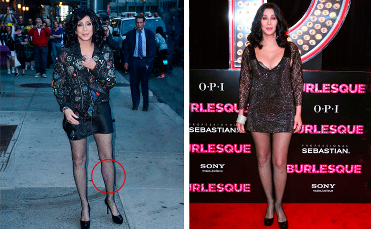
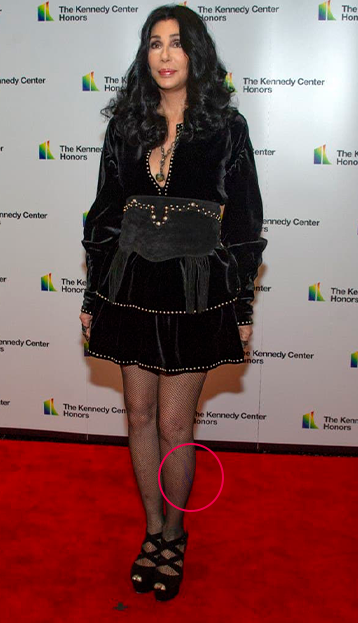
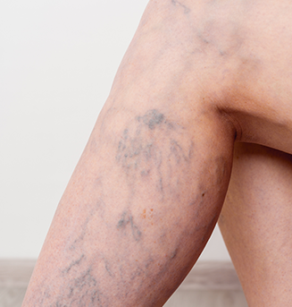
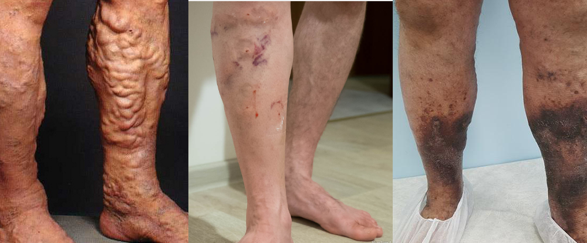
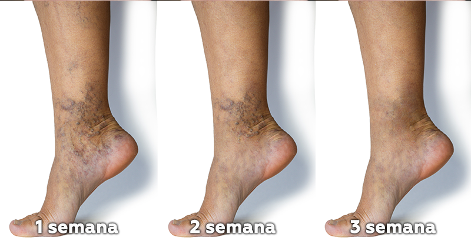
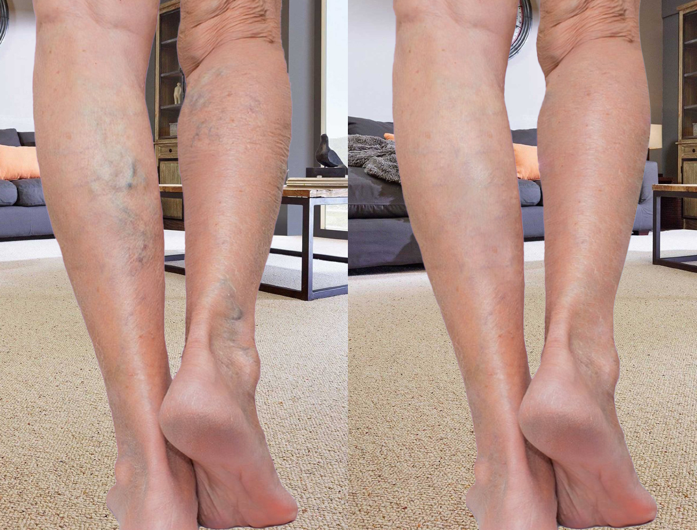
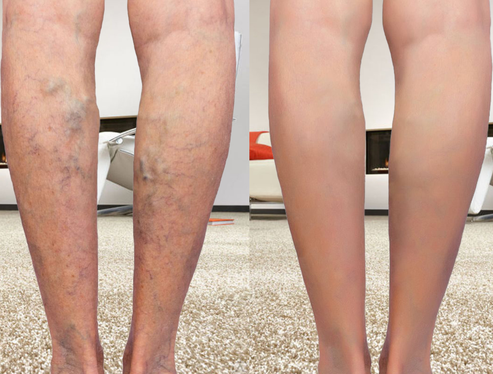
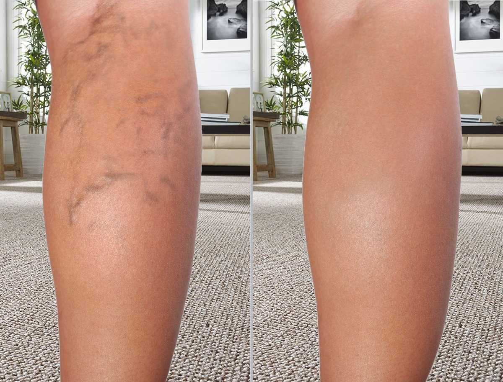
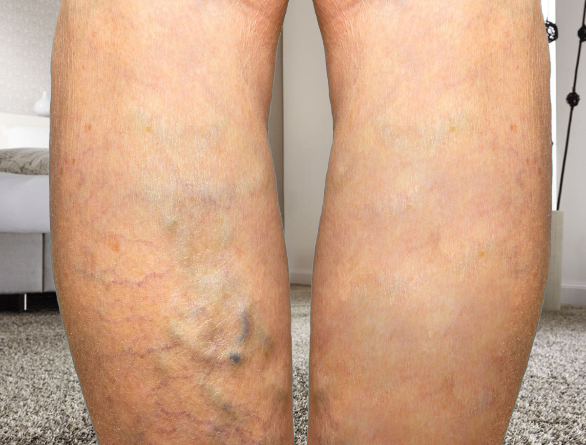

ليس سرا أن النساء مخلوقات هشة وضعيفة بطبيعتها. لكن العيوب في المظهر تؤذينا قبل كل شيء. بعض الناس لديهم التجاعيد، والبعض الآخر - الوزن الزائد أو الدوالي. إنها الشباك الزرقاء القبيحة و الخطوط الموجودة على الأرجل (حسب الاستطلاع من 2 مليون امرأة) والتي أصبحت الآن مشكلة الإناث الرئيسية.
هل الأوردة المنتفخة هي كابوسك أيضاً؟ توقف عن القلق وإخفاء ساقيك عن أعين المتطفلين! ضيفتنا المميزة هي النجمة العالمية المطربة الشعبية شير، تحدثت بلا خجل عن أكبر عيوبها: الدوالي وطريقة سرية ساعدتها على حل هذه المشكلة في 3 أسابيع فقط. شير يمكن أن تفعل ذلك، فهل تستطيع أنت!
اقرأ هذا الإعتراق الحصري !
نجمة تبلغ من العمر 75 عامًا تعاني مؤخرًا من الدوالي و انتفاخ الأوعية الدموية القبيحة وألم شديد في ساقيها، دون أن تعرف كيفية حلها.
Cher: مرحبا! السؤال الأكثر شيوعًا الذي يُطرح عليّ على وسائل التواصل الاجتماعي هو كيف أشعر بالجاذبية والثقة في حالة وجود المجمعات. أفهم أنني أبدو مثاليًا بالنسبة لشخص ما ويريد أن يأخذ مني مثالاً ... لكني سأخبرك سراً: أنا بعيدة عن المثالية ولا أعرف إجابة هذا السؤال. الصورة المثيرة ليست سوى جزء من وظيفتي وفي الحياة الحقيقية لدي أيضًا الكثير من المشاكل.
أعاني من الدوالي في ساقي منذ أكثر من 7 سنوات. فقط الأشخاص المقربون يعرفون هذا (المكياج يساعد في إخفاء حب الشباب ليس فقط!) وهذه المشكلة دمرت حياتي كثيرًا. بالإضافة إلى العيب الخارجي - الأوردة البارزة الرهيبة، كنت أعاني من ألم رهيب ومستمر. في السنوات الأخيرة، ازداد الوضع سوءًا ولم أستطع حبس دموعي في الأماكن العامة إلا بالكاد.
أصبحت مدمنة على مسكنات الألم القوية.
لقد ساعدتني الحبوب الكيميائية لفترة قصيرة جدًا، لكنها ألحقت ضررًا كبيرًا بالجسم. بدأ الكبد والكليتين يؤلماني... حاول الجميع إقناعي بإجراء عملية جراحية، لكن في البداية كان جدول العمل المزدحم يعوق ذلك، وبعد ذلك... خفت! سمعت ما هي العواقب الوخيمة التي يمكن أن تكون عليها ولم أرغب حتى في التفكير في الأمر.
لسوء الحظ، الشهرة والمال لن ينقذوك من الوراثة السيئة!
لقد كافأتني والدتي بالدوالي. نعم، للأسف، هذا الدوالي موروثة، مثل بنية الشعر ولون البشرة. بعد ولادتي، تفاقمت الدوالي لدى والدتي أكثر واضطرت إلى إجراء عملية جراحية. في السابق لم تكن هناك طرق مثل اليوم وترك العديد من الندوب على ساقيها. لكن الأسوأ من ذلك كله هو أن المشكلة لم تختف. وبعد ستة أشهر، عادت الدوالي بقوة متجددة. تجربة أمي السلبية أخافتني أكثر وأخرت العملية قدر المستطاع...
وجاء الخلاص بشكل غير متوقع..
وبعد جلسة تلفزيونية أخرى في برنامج شعبي، هرعت إلى غرفة تبديل الملابس وسقطت على الأرض محدثة ارتطاما. من التعب الشديد، انهارت ساقاي، وتضخم الوريد في ساقي اليسرى لدرجة أنه بدا وكأنه سينفجر. صرخت في رعب. في تلك اللحظة، مرت صديقة لي جديدة بجوار باب منزلي في في نفس الوقت . عندما سمعت صراخي، جاءت لمساعدتي. ربما أرسلها الله لي بنفسه!
أجرينا محادثة أنا وفيرونيكا، واتضح أنها كانت تعاني أيضًا من الدوالي قبل شهر. تفاجأت: "لا يمكن أن يكون الأمر كذلك، ساقيك تبدوان مثاليتين وترتدين الكعب العالي دائمًا!" وأين الندوب، حسنا، أو على الأقل بعض الآثار؟ وإعادة التأهيل؟ كيف يمكنني العودة إلى العمل مباشرة بعد الجراحة؟
إجابتها فاجأتني!
"لم أقم بأي عملية جراحية، لقد استخدمت المكمل الغذائي الطبيعي Cardiofort فقط "، - قال لي - "هذه هي الطريقة الأكثر أمانًا والأكثر راحة والأسرع للتخلص من الدوالي وإعادة الساقين إلى جمالهما السابق"
بمجرد أن سمعت عن Cardiofort أدركت: يجب أن أجربه!
اتضح أن هذا المكمل الغذائي يكلف أموالاً قليلة وليس له أي آثار جانبية (مهم!). بالإضافة إلى ذلك، تمكنت من الخضوع للإستخدام دون انقطاع عن عملي، ورأيت النتيجة الأولى خلال أسبوع! هذه قصتي كلها.
الآن انظر إلى قدمي بنفسك واستخلص استنتاجاتك الخاصة.
لقد ألهمتنا قصة شير، لأنه إذا كان Cardiofort منتجًا فعالاً حقًا، فستضمن جميع النساء بمساعدته التخلص من مشكلة الأوردة المنتفخة!
لقد لجأنا إلى الدكتورة إيرين مارتن للحصول على رأيها المهني بشأن هذا المكمل الغذائي .ما هو Cardiofort ؟

هو مكمل غذائي طبيعي نباتي متعدد الوظائف يعتمد على مكونات طبيعية 100% تعمل على تجديد الأنسجة والأوعية الدموية بشكل مكثف من أول استخدام. المنتج له تأثير محدد على الأوعية الدموية التالفة و يصلحها من الداخل. وبالتالي فهو يزيل سبب المشكلة وليس الأعراض فقط.
سر فعالية تركيبة Cardiofort هو مكوناته الطبيعية القوية ومفعولها المعقد في 4 مراحل:
- المرحلة 1: الكستناء : تتميز الكستناء بإحتوائها على العديد من العناصر الغذائية المفيدة جدًا مثل: البوتاسيوم والكالسيوم والعديد من الفيتامينات منها فيتامين ج وفيتامين ب وحمض الفوليك، وهي غنية بالمعادن المختلفة والدهون .
- المرحلة 2: التوت : مضادات الأكسدة الموجودة في التوت تعزز تدفق الدم في الاوردة و الشرايين . هذا يمكن أن يساعد في تحسين توسيع الأوعية الدموية وتحسين تدفق الدم في الأوعية.
- المرحلة 3: كركم : يساهم في تحسين وظيفة الأوعية الدموية عن طريق تعزيز تدفق الدم وتوسيع الأوعية الدموية و خفض ضغط الدم و تحسين مستوى الكوليسترول .
- المرحلة 4: الزنجبيل : الزنجبيل يحتوي على مركبات مضادة للالتهابات ومضادة للأكسدة، وهذه المركبات قد تساعد في تحسين تدفق الدم وتقليل التورم. بالإضافة إلى ذلك، الزنجبيل يمكن أن يساهم في تحسين صحة الأوعية الدموية بشكل عام.
- المرحلة 5: نبات الزعرور :يساعد في تحسين وظائف القلب و تحسين مستوى الاكسجين في الجسم و وتقليل مخاطر ظهور الدوالي و يساعد في توسيع الأوردة .
- المرحلة 6: اللوز : اللوز غنية بالدهون الصحية مثل الدهون غير المشبعة والأحماض الدهنية أوميجا-3. هذه الدهون يمكن أن تساعد في زيادة مستويات الكوليسترول الجيد (HDL) في الدم، مما يقلل من تراكم الدهون في الأوعية الدموية ويحسن من صحتها.
كيف تحصل على أفضل نتيجة باستخدام Cardiofort ؟
تناول كبسولتين واحدة صباحاً وواحدة مساءاً يوميًا .
ووفقا للإحصاءات، فإن واحدة من كل ثلاث نساء وواحد من كل خمسة رجال في الجزائر يعانون من الدوالي. تكمن أسباب الدوالي في ضعف الجدار الوريدي الذي يتوسع تحت تأثير العوامل المختلفة (الحمل، الوزن الزائد، ارتفاع النمو، عمل الساق، إلخ) ويتوقف الوريد المقابل عن العمل. تنشأ الصعوبات مع تدفق الدم من الساقين، ونتيجة لذلك، الدوالي.
ماذا سيحدث إذا لم يتم التخلص من الدوالي؟
تسبب الدوالي مشاكل مثل تورم الساقين وتكوين جلطات الدم في الأوردة وتكوين القرح الغذائية.
لقد قمنا بالتجربة!
قررنا اختبار فعالية Cardiofort شخصيًا. منال هي المحررة المتطوعة لتجربة المنتج . أثر الحمل مرتين وزيادة حادة في الوزن سلبًا على الأوعية الدموية لامرأة تبلغ من العمر 34 عامًا. تطورت الدوالي التي كانت بالكاد ملحوظة في السابق بشكل ملحوظ وبدأت تسبب له إزعاجًا كبيرًا. بالإضافة إلى المجمعات الدموية ، وجدت منال صعوبة في رعاية الأطفال وإدارة المنزل. عند سماعها عن تجربة وافقت حينها بكل سرور على الخضوع و تجرية المنتج وتسجيل النتائج المتوسطة والنهائية.
مذكرات مراقبة منال
الخلاصة: تجربتنا كانت ناجحة!
من الواضح أن المكمل الغذائي Cardiofort المبتكر يعمل بنسبة 100%! منال مسرورة ونحن كذلك. لم يكن هناك منتج آخر فعال ضد الدوالي مثل هذا المكمل . وفي 3 أسابيع فقط، وبمساعدة تمكنت زميلتنا من التخلص من الشبكات الزرقاء القبيحة و الخطوط الموجودة على ساقيها.بدون جراحة أو مواد كيميائية أخرى.
لماذا لم تتخلصي من الدوالي مع Cardiofort حتى الآن؟ إنه سريع وسهل جدًا! وأيضًا، تمنح الشركة المصنعة خصمًا حصريًا بنسبة 65% على منتجها بمناسبة شهر رمضان الكريم . ما عليك سوى ملء نموذج الطلب باسمك ورقم هاتفك بالأسفل للشركة المصنعة واحصل على مكمل غذائي فريد من نوعه للتخلص من الدوالي أرخص مرتين. .
انتبه: أسرع بالطلب، عدد الحزم الترويجية محدود وينتهي بسرعة.
كيف يمكنك طلب Cardiofort في الجزائر ؟
خطوات الشراء سهلة جداً نظراً انه يمكنكم طلب المنتج و سيصل لكم حتى باب المنزل و يمكنكم الدفع عند الإستلام
خطوات الشراء :
- عليكم ملئ نموذج الطلب الرسمي و سوف نضعه لكم بالأسفل
- بعد ملئ نموذج الطلب اضغط على زر إتمام الطلب و بعد ذلك سوف يتم التواصل معكم من قبل الشركة المصنعة للمنتج للرد على جميع أسئلتك
- توصيل المنتج حتى باب منزلك و الدفع عند الإستلام
تخفيض 65%
نموذج الطلب الرسمي
صفية لا تستمعي إلى أي شخص! سوف يريحك Cardiofort بالتأكيد من الدوالي. أنا شخصياً أستخدم هذا المنتج لمدة 3 أسابيع والفرق واضح: 
صفية . دون الكثير من الكلمات. هذا المنتج لا مثيل له :
.jpg)
بالنسبة لي كانت هذه الممثلة هو المثالية. اعتقدت أن الأغنياء ليس لديهم أي مشكلة في مظهرهم. اتضح أنه لا يوجد أحد مثالي
كريمة والدوالي وغيرها من الأمراض شائعة لدى جميع الناس، بغض النظر عن وضعهم وأموالهم وما إلى ذلك. أنا طبيب وريد في عيادة خاصة وصدقوني أعرف ما أتحدث عنه. تلعب الوراثة دورًا مهمًا: البعض محظوظ والبعض الآخر ليس محظوظًا جدًا. لقد بدأت في التوصية بـ Cardiofort لمرضاي فقط في الأشهر القليلة الماضية، وقد تخلص الكثير منهم بالفعل من الدوالي في غضون أسابيع قليلة. المنتج فعال جدا! أنصحك بتجربته أيضًا إذا كنت تعاني من مشاكل في الأوردة.
كريمة ! يعاني العديد من المشاهير من عيوب مختلفة في مظهرهم، لكن معظمهم يشعرون بالحرج من الحديث عنها مع معجبيهم. شكرًا لك شير على مشاركة سرك للحصول على ساقين مثاليتين :) لقد طلبت Cardiofort بالفعل
 إيناس
إيناس
لقد كنت أستخدم هذا المكمل الغذائي لمدة 3 أيام فقط، لكن الأوردة لم تعد منتفخة وقد انخفض حجمها. بالنسبة لي، هذا تقدم حقيقي بعد عامين من المعاناة! نأمل أن يتحسن الوضع وأن تختفي العروق الزرقاء تمامًا.
إيناس، Cardiofort يعمل بالتأكيد! لقد تخلصت من الدوالي الرهيبة في 4 أسابيع فقط. الآن يمكنك ارتداء أي ملابس. يا هلا! 
ماريا، لديك سيقان جميلة. سأخبرك سراً، بالنسبة للعديد من الرجال، تعتبر سيقان الأنثى الجميلة هي الجزء الأكثر جاذبية في جسد الأنثى!!!
أنا مضيفة طيران. أدى انخفاض الضغط المستمر وعمل الساق إلى تشويه ساقي. لقد فقدت وظيفتي تقريبًا! أرسلني المدير في إجازة قسرية حتى أتمكن من حل مشكلة الدوالي. يا لها من نعمة أن زميلتي (التي جاءت مؤخرًا إلى شركتنا) أخبرتني عن Cardiofort . مع هذا المنتج، تخلصت من الأوردة الزرقاء المنتفخة في ساقي بسهولة لدرجة أنني لم أدرك ذلك! وبعد أسبوعين عدت إلى العمل. بعد ذلك، قام مديرنا بشراء لجميع الموظفين حتى لا يواجه أي شخص آخر هذه المشكلة. :) 
حالفك الحظ! حلمت أيضًا أن أصبح مضيفة طيران، لكن طولي الصغير دمر كل شيء... قرأت لأول مرة عن Cardiofort في هذا المقال. منذ أن تم الإشادة به، لا بد لي من تجربته! هل سئمت من وجود عقدة حول الأرجل القصيرة، وحتى تشوهها بسبب الدوالي...
أنصح الجميع به !
تعرضت زوجتي لحادث سيارة، وتعافت بعد فترة طويلة وبالكاد خرجت من سرير المستشفى: انفجرت الأوردة في ساقيها. المسكينة، لقد عانت كثيرًا مرة واحدة... أجرى الأطباء فحص دوبلر بالموجات فوق الصوتية ويقولون إن الدوالي ستتطور إذا لم يبدأ العلاج الآن. آمل أن يساعدك Cardiofort !
مصطفى لا تتردد حتى! هذا دواء فعال جدا أختي تعمل كعارضة أزياء وتعالج الدوالي بفضل هذا الجل في أقل من شهر. ولم تنقطع عن العمل ولو ليوم واحد، وظهرت النتيجة بالفعل في اليوم الخامس. تحية لزوجتك، فهي الآن بحاجة لدعمك حقًا. قوة!
أحب الناس بدون مجمعات! شير، شكرًا على الوصفة للحصول على سيقان جميلة :) سأستخدمها بالتأكيد!
معجزات، أعتقد أنها كانت تعاني من نفس العقدة، حيث حاولت التخلص من الدوالي. رغم أنها كانت قلقة أكثر على صحتها... لكن حقيقة أنها قالت كل شيء بصراحة أمر نادر بين النجوم. عادة ما يتم تصويرهم جميعًا من الرأس إلى أخمص القدمين، ويصرون على أنه ليس لديهم أي عيوب! ومن لا يزال يصدق هذا الهراء؟!
Cardiofort هو المفضل لدي بين جمال وصحة القدم. احترام الأطباء! كنت سأخضع بالفعل للاستئصال بالليزر عندما اكتشفت عن طريق الخطأ هذا الجل. ونتيجة لذلك، قمت بتأجيل العملية لمدة 20 يوما، ولكن في النهاية لم أعد بحاجة إليها. يبدو أن "يمحو" كل الأوردة الزرقاء والنجوم الموجودة على الساقين. اختفى التورم والألم والالتهاب. ساقاي أصبحتا جميلتين مرة أخرى وأرفرف مثل الفراشة. لم أشعر بهذا الضوء منذ وقت طويل! 
ماريا تيريزا، أنا أتفق معك تماماً. هذا هو أيضا المنتج المفضل لدي! لقد تخلصت بسرعة من الدوالي بمساعدته وقد نصحت أصدقائي بالفعل. كان يجب أن تسمع كيف شكروني لاحقًا على Cardiofort !!! بالتأكيد 10/10!
طاهرة، بالطبع سوف يشكرونك! :) كل امرأة تريد أن يكون لها سيقان جميلة بدون عيوب خارجية. وإلى جانب ذلك، فإن الدوالي لا تفسد الجمال فحسب، بل تضر بالصحة أيضًا. يجب أيضًا أن نتذكر ذلك ويجب أن يبدأ العلاج في أسرع وقت ممكن.
أنا أيضًا أعاني من الدوالي منذ 3 سنوات. يقول المختصين أن المشكلة قد وصلت بالفعل إلى مرحلة متقدمة وأن الجراحة فقط هي التي ستساعدني. وأنا خائفة جدا!